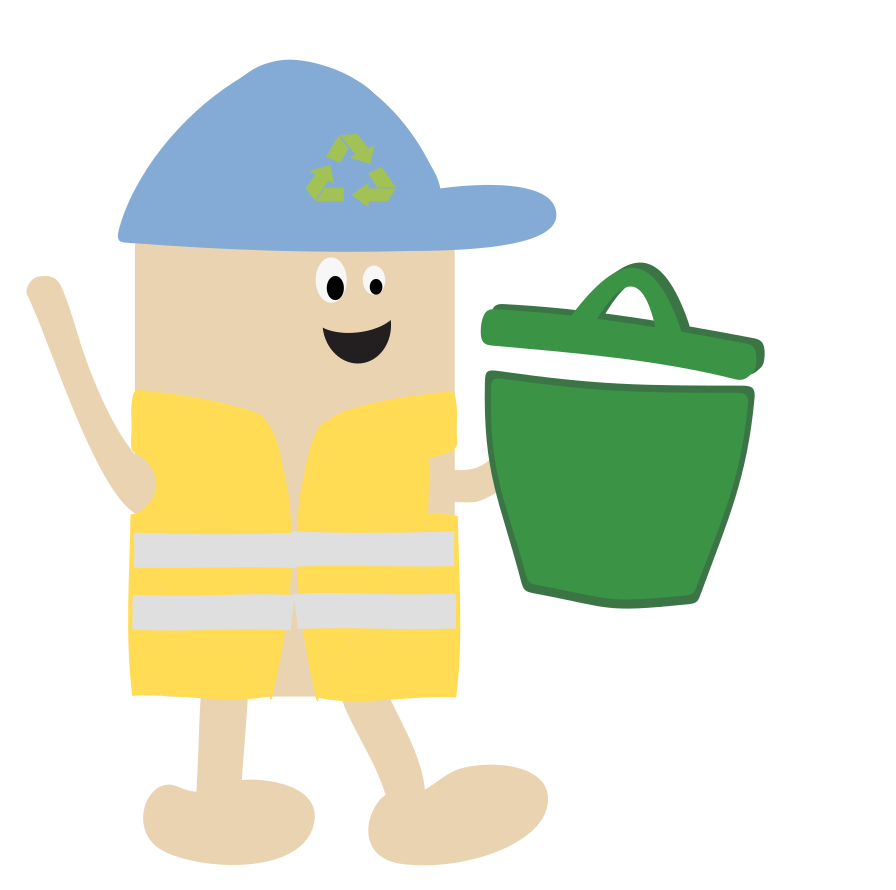

På temaet animation blev vi introduceret til JavaScript. Formålet var at skabe et simpelt spil med JavaScript og CSS-animationer. Af stiludgangspunkt valgte jeg at arbejde med flat design, hvor der benyttes simple todimensionelle former og lyse farver. Vi arbejdede med Illustrator til at tegne spil-elementer og baggrunde. Efterfølgende lærte vi at udarbejde UML aktivitetsdiagrammer og state machine diagrammer til at skabe struktur og overblik over det interaktive-flow.
Prøv spillet